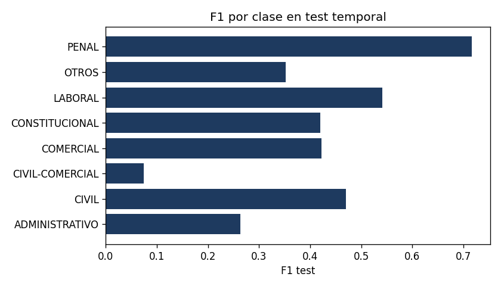

UNC — FaMAF · Mentoría SAIJ 2026
Práctico 3 — avance hasta D7
P3 hasta D9 (buscador). D10 = imprimir/subir. Defensa: DEFENSA.html.
No supervisado (D6)
k=8, train only. Silueta ~0,01. ARI vs Y = 0,048. Clusters = género/plantilla, no fuero.
Supervisado (D7)
Y grosera D5. TF-IDF+LR elegido en D4 (no reelegido con test). Train <2013 / test ≥2013.
| macro-F1 test | |
|---|---|
| Dummy estratificado | 0,12 |
| BoW+NB (solo para comparar) | 0,41 |
| TF-IDF+LR (congelado) | 0,41 |
Peor clase: CIVIL-COMERCIAL (0,07). Mejor: PENAL (0,72). El empate BoW/TF-IDF en test no reabre D4.
Errores (D8)
3.680 desaciertos en test. 20 casos: (A) Y manda a OTROS un texto claramente penal; (B) CIVIL↔COMERCIAL sin léxico propio; (C) OTROS/PROCESAL y CONSTITUCIONAL↔PENAL; (D) párrafos cortos o jerga de recurso. Lista: d8_errores.json. No se retoca Y con el test.
Búsqueda (D9)
Coseno TF-IDF, 31.371 docs de la 50k. Queries técnicas (quiebra, estupefacientes, injuria LCT) recuperan el tema. Coloquial (“plata”, “echaron”, “droga para consumo”) baja el score o pega ambigüedad (pagaré de consumo). “Recurso extraordinario” = plantilla procesal, no fuero. No es RAG. No usar para dictámenes.
